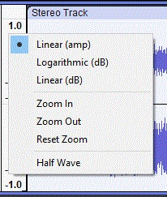
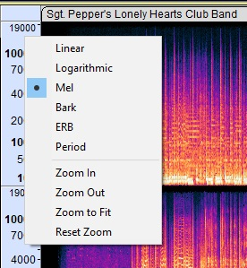
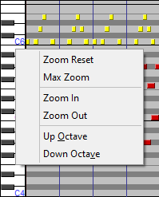

Vertical Zooming
From Audacity Development Manual
If you want to carefully inspect a small portion of your audio in detail, you will want to use one of these Vertical Zoom methods.
- Vertical Zooming works in audio tracks regardless of the view type - and works in note tracks.
- Vertical Zooming is not available for label tracks or time tracks.
| A useful alternative to Vertical Zooming can be to enlarge the track size vertically by changing the height of the track, see Changing the track display ion the Audio Tracks page. |
Contents
- Vertical Zooming in Waveform view
- Vertical Zooming in Spectrogram view
- Vertical Zooming in Note Tracks
Vertical Zooming in Waveform view
 The Vertical Scale (the vertical ruler to the left of the waveform can be used to control the vertical zoom level. Right-click in the Vertical Scale will bring up a dropdown context menu enabling:
- Zoom In - zooms in vertically, centered on the middle of the waveform. It can be used repeatedly.
- Zoom Out - zooms out vertically, centered on the middle of the waveform. It can be used repeatedly.
- Reset Zoom - resets the waveform to normal zoom level
- Half wave - displays the top half of the waveform only, can be useful when working with many tracks

Zooming using the mouse wheel With the cursor in the Vertical Scale:
- Hold Shift and rotate the mouse wheel to scroll up and down at the same zoom level, using the same visible range of amplitude or frequency.
- Hold Ctrl (⌘ on Mac) and rotate the mouse wheel to zoom in or out at the mouse pointer's position.
- In Logarithmic (dB) view only - Hold Ctrl (⌘ on Mac)and Shift and rotate the mouse wheel to vary the lower dB limit of the scale at the same zoom level, irrespective of the limit set at "Meter dB range" in Tracks Preferences. This only takes effect if the horizontal mid-line between positive and negative samples is visible, so has no effect if you are zoomed in on a portion of the vertical range that does not include the mid-line.
Above the line are commands to change the Waveform view types (these are not zoom commands).
Vertical Zooming in Spectrogram view
Vertical zooming operates similarly in Spectrogram view, where you can use the context menu. Note though that the Vertical Scale context menu when in Spectrogram view has some different menu items.
In addition you can use click and drag in the Vertical Scale to specify a zoom range. You will see a large plus-sign cursor to indicate this.
 Below the line are the vertical zoom commands (these differ from the vertical zoom commands in waveform view): - Zoom In - zooms in vertically, centered on where you click in the vertical scale for the menu. It can be used repeatedly
- Zoom Out - zooms out vertically, centered on where you click in the vertical scale for the menu. It can be used repeatedly
- Zoom to Fit - vertically fits the spectrogram to the available space
- Reset Zoom - resets the vertical zoom level to the default
Vertical Zooming using the mouse wheel With the cursor in the Vertical Scale:
- Hold Shift and rotate the mouse wheel to scroll up and down at the same zoom level.
- Hold Ctrl (⌘ on Mac) and rotate the mouse wheel to zoom in or out at the mouse pointer's position.
Above the line are commands to change the spectrogram view type (these are not zoom commands).
Vertical Zooming in Note Tracks
For Note Tracks the Vertical Scale displays note pitches like a piano's keys, ranging from the lowest to the highest possible MIDI notes (C -1 to G 9). Each octave is labeled at C (and the notes above are in that octave).
 A Note Track's Vertical Scale also has a context menu accessed by right-clicking in the Vertical Scale: - Zoom Reset - zoom out to show the bottom and top notes from the track (the same as when it was initially imported).
- Max Zoom - zoom out in one step to show the entire range of notes (from C -1 to G 9).
- Zoom In - zooms in vertically, centered on where you click in the vertical scale for the menu. It can be used repeatedly.
- Zoom Out - zooms out vertically, centered on where you click in the vertical scale for the menu. It can be used repeatedly.
- Up Octave - scrolls up one octave, without changing the zoom level.
- Down Octave - scrolls down one octave, without changing the zoom level.
Advanced - click and drag

When the mouse pointer is over the scale it changes to a magnify icon  .
.
- Left-click in the Vertical Scale to zoom in. The range displayed on the scale will be centered at the value you clicked at. Left-click and drag a region up or down then release to zoom into that region. You can press Esc to cancel the zoom operation if you commence a drag by mistake.
- Hold Shift and left-click to zoom out progressively. When the Shift key is held down the plus sign on the magnify icon changes to a minus icon.
- Hold Shift and rotate the mouse wheel to scroll up and down at the same zoom level, using the same visible range.
- Hold Ctrl and rotate the mouse wheel to zoom in or out at the mouse pointer's position.
- Hold Shift and right-click to zoom out to zoom out to show all notes. Hold Shift and right-clicking again to show the entire range of notes (from C -1 to G 9).
Observe carefully the little black marks above and below the colored notes in the aboveimage. These indicate that there are additional notes in the Note Track above and below them. More notes can me made visible by using Vertical Zooming.